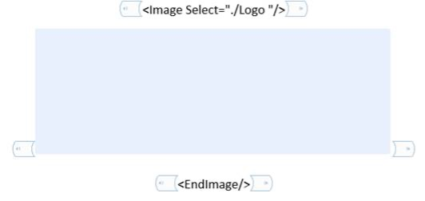
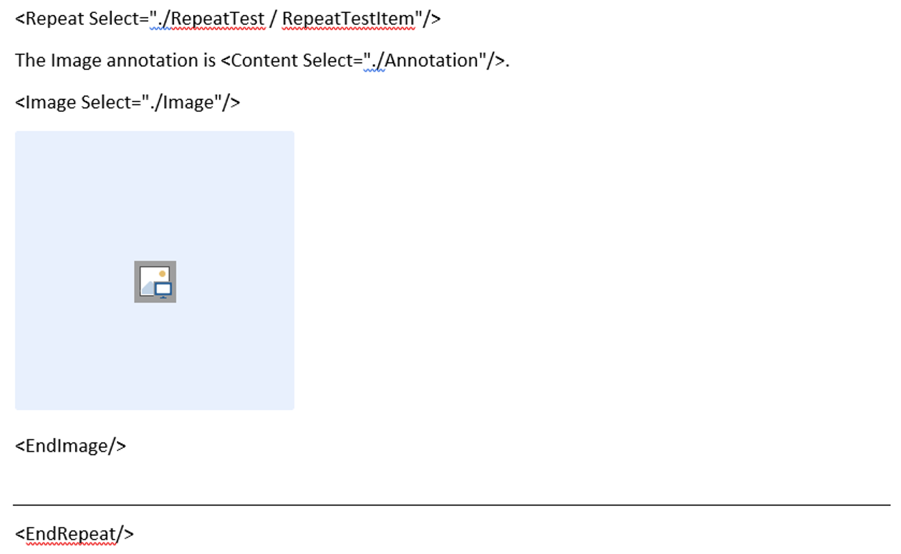
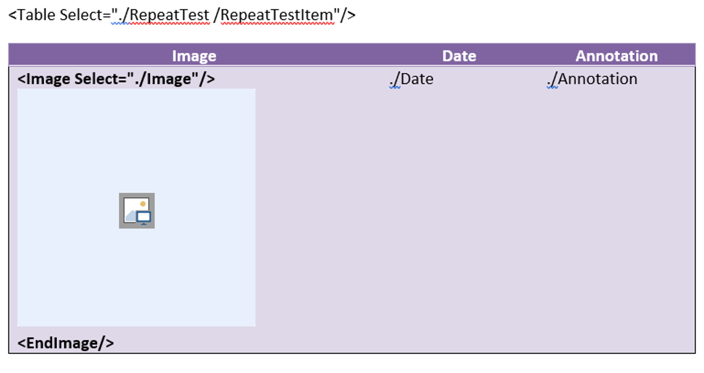
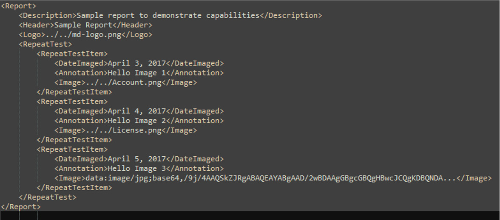

Key highlights from #31
- Image can be provided either by base64-encoded string or by specifying the filename. The Assembler will have to figure out the image type, based on either MIME or file extension. Here are both examples:
<Logo>../../md-logo.png</Logo><Image>data:image/jpg;base64,/9j/4AAQSkZJRgABAQEAYABgAAD/2wBDAAgGBgcGBQgHBwcetc…</Image>
- The image content control will be surrounded by new type of select (in similar to repeat or conditional) –
Image SelectandEndImage. I found this approach easier than dealing just with the image content control. Here is the example:

- When used in repeated context, the image is used with relative XPath (in similar to other fields):

- Very similar situation with the Table:

- Here is example of data xml file:

There is still a lot to be improved and some issues to be resolved, such as using templated image in header/footer, managing image size (preserve original/modify based on template/maintain aspect ratio etc.)
Samples can be found in
DocumentAssemblerTests.csmerged in #31